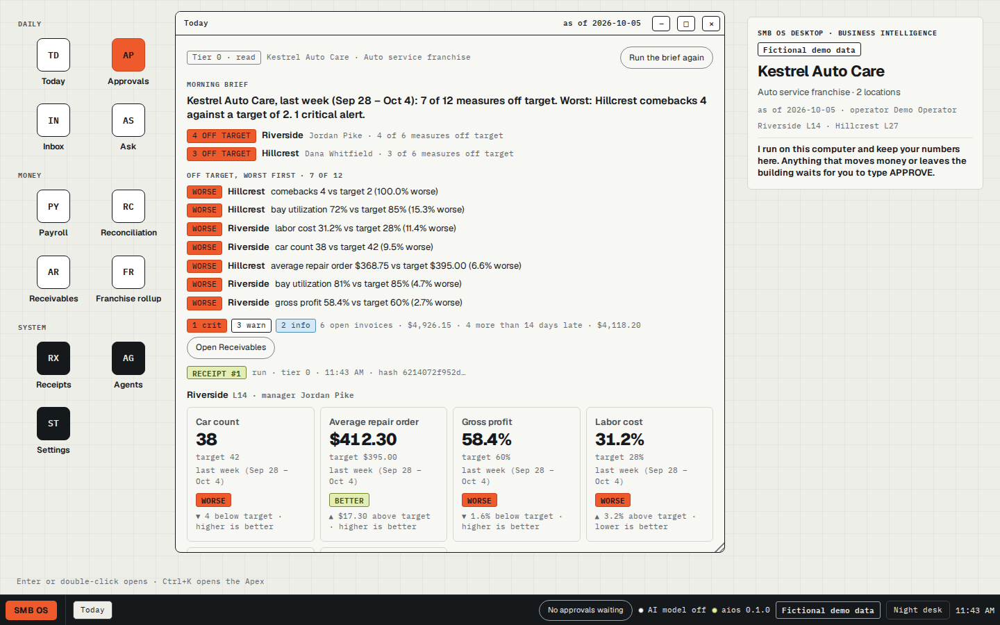
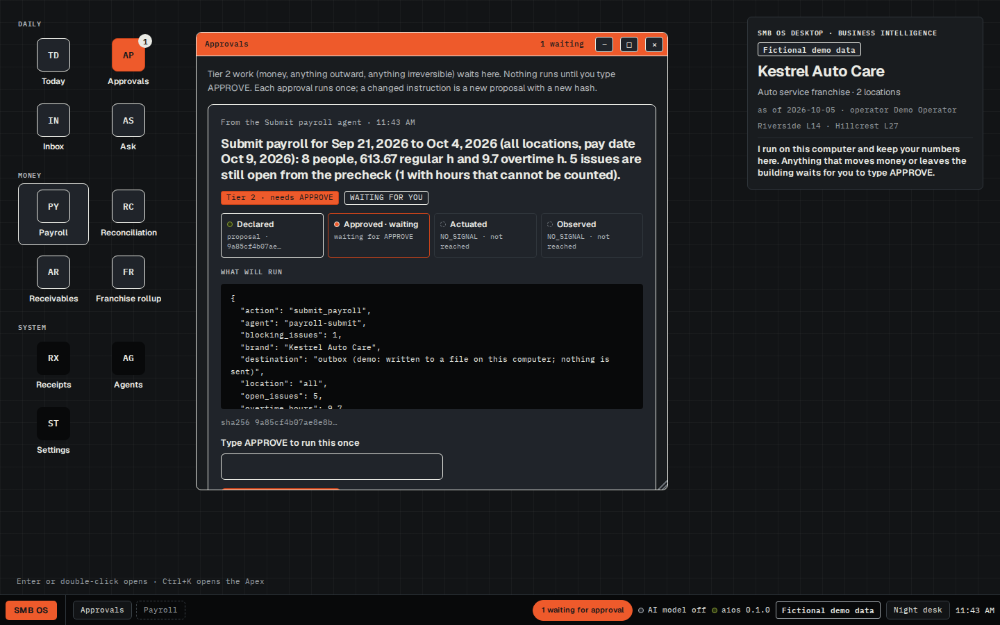
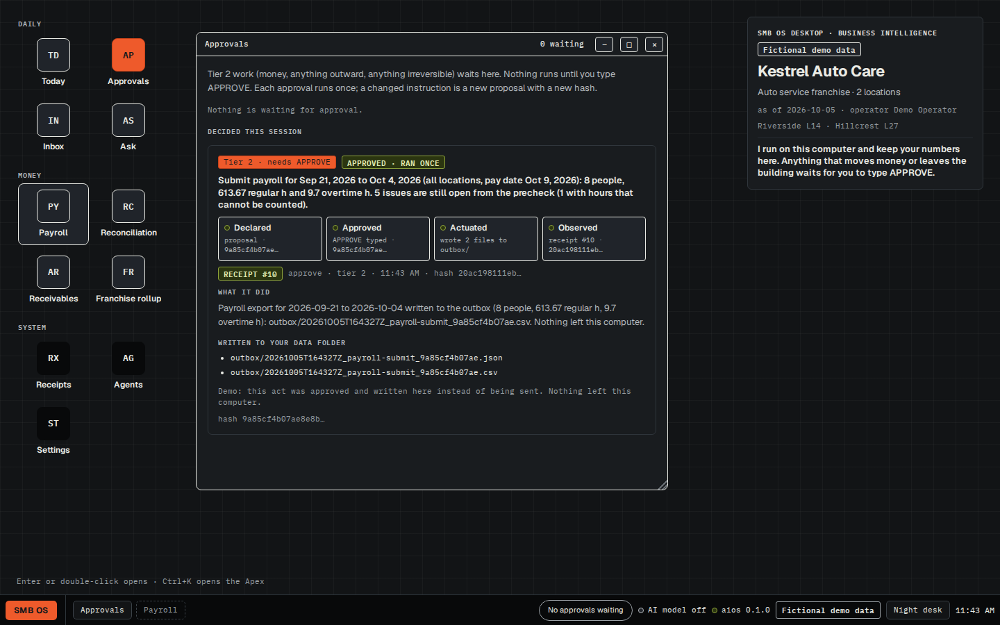
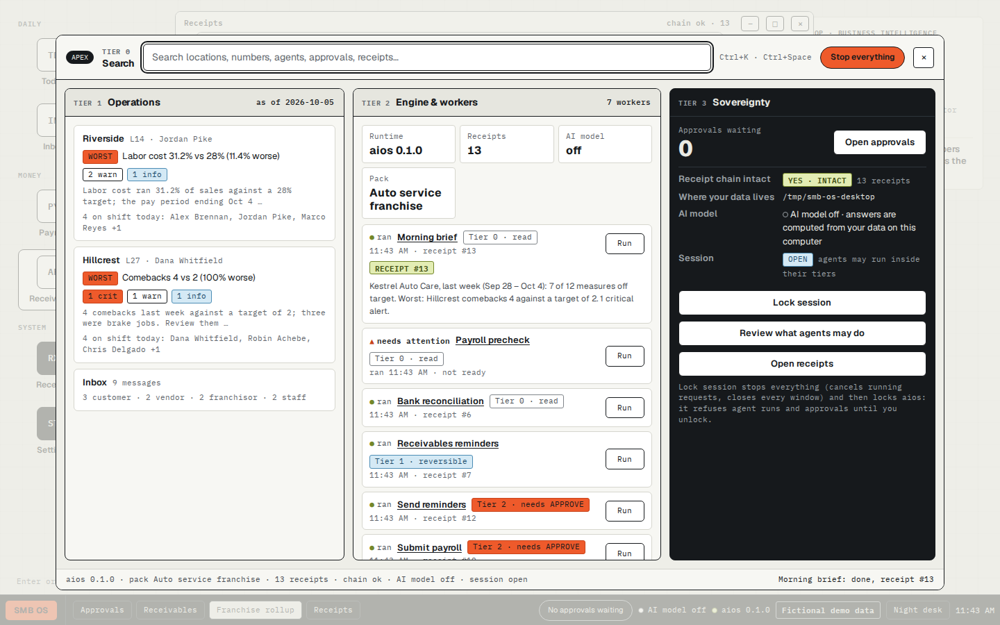

SMB OS Desktop: business intelligence that runs on your computer, and answers to you
For the owner of a small multi-location franchise. Agents on your own computer prepare the morning numbers for every location, check payroll against the schedule, reconcile the bank, draft reminders for late invoices and do the franchise rollup. They read, reconcile, prepare and draft. Anything that would move money, send something outside or can't be undone waits at a gate only you can open: one exact action, once, with a receipt.
It is one file. Double-click it and the desktop opens in your browser, with the data in a folder on your machine. Version 0.1.0 runs on two fictional demo businesses, an auto service franchise and a home care franchise. It does not connect to your own systems yet.
SMB OS Desktop runs on Windows, macOS and Linux, not on a phone or tablet. Open this page on your computer to get the file, or send yourself the link:
- Windows (x86-64) smb-os-desktop_windows_amd64.zip
- Mac, Apple silicon (M1+) smb-os-desktop_darwin_arm64.zip
- Mac, Intel processor smb-os-desktop_darwin_amd64.zip
- Linux (x86-64) smb-os-desktop_linux_amd64.zip
- Linux (ARM64) smb-os-desktop_linux_arm64.zip
Or from a terminal. The installer picks the right file, checks it against
SHA256SUMS.txt and starts it. macOS and Linux:
curl -fsSL https://github.com/wayneColt/smb-os-desktop/releases/latest/download/install.sh | sh
Windows, in PowerShell:
irm https://github.com/wayneColt/smb-os-desktop/releases/latest/download/install.ps1 | iex

Intelligence where the owner works
An owner with a few franchise locations runs the business across a stack of tabs: the scheduling system, the shop-management or care-management system, the accounting system, the bank's export, the franchisor's reporting. Each holds its own slice. The first question of the day, how each location did against target and what needs attention, gets answered by hand. And the acts that matter most, payroll, payments, reminders to customers, sit in the same tabs, where the click is the permission.
Business intelligence only helps where the owner is working. Today that is your computer: this download and the small program it runs, with nothing sent to anyone else's servers unless you turn on an AI model. Next, the same design on a phone, with approvals within thumb reach, and on a web desk. Neither of those is in 0.1.0.
Two planes, one authority
You hold the authority. The agents run in their own plane and hold none: they read, reconcile, prepare and draft. Between the two sits a hard gate, and every agent has a tier that decides what happens when it is asked to run:
- Tier 0, reading and calculating: runs at once and writes a receipt.
- Tier 1, a reversible change that stays on your machine (switching the demo business, saving matches, saving drafts): runs at once and writes a receipt.
- Tier 2, money, anything sent outside, anything that can't be undone: never runs when
asked. It becomes a proposal bound to one exact action by its fingerprint, the SHA-256 of the
instruction. Your typed
APPROVEopens it once. Change one detail and it is a new proposal with a new fingerprint.
An agent can make a proposal; it has no way to approve one. What each agent may read, what it may write and what it may never touch is listed in the Apex, and Lock session stops every agent run and every approval until you unlock.
How 0.1.0 enforces this, plainly: the gate is enforced by the program running on your computer. An
approved tier-2 act writes its payload to an outbox folder and contacts nothing. There is no
separate account or sign-in, so anyone who can use this computer can open the desktop and approve; Lock session
is a pause, not a password.
What the agents prepare
All rule-based; none needs an AI model.
| Agent | What it does | Tier |
|---|---|---|
| Morning brief | A headline, a line per location, and variances against target, worst first | 0 |
| Payroll pre-check | Hours against the schedule for each person: overtime, missing punches, unverified visits (home care) or flagged against clocked hours (auto service) | 0 |
| Bank reconciliation | Matches bank lines to ledger entries (same amount, dates within 3 days, matching reference), lists what didn't match, suggests entries for fees and interest. Saving the matches is tier 1 | 0 / 1 |
| AR reminders | Drafts reminder notes for invoices more than 14 days late | 1 |
| Send reminders | Sends the drafts | 2 |
| Submit payroll | Writes the payroll export | 2 |
| Franchise rollup | Revenue, royalty and ad fund for each location, and the franchise total | 0 |




The Apex: four bands
Ctrl+K opens the Apex command surface, laid out in four bands:
- Search: open any window, find a location, a number, an agent, an approval or a receipt. Type a question and its Ask result opens the Ask window with it.
- Operations: the business right now: each location's worst measure, its alerts, and who is on shift.
- Engine & workers: each agent and its state (ran, needs attention, idle), its tier, and a Run button.
- Sovereignty: approvals waiting, whether the receipt chain is intact, where your data lives, whether an AI model is on, and Lock session. "Review what agents may do" lists each agent's tier, what it reads, what it writes, what it never touches, and its network access: none.

To stop: Stop everything, in the Apex's top bar, cancels running requests and closes every window. Lock session does the same and then locks the program, so agent runs and approvals are refused until you press Unlock session.
Receipts
Every run, proposal, approval, decline and switch of demo business adds a line to
receipts.jsonl. Each line includes the SHA-256 of the line before it, so changing or
deleting an earlier line breaks the chain, and the Receipts window says so.
The chain detects edits. It can't stop someone who can write to the folder from rewriting the whole file. If that matters to you, keep a copy somewhere else.
Engine specifications
- Program: one binary,
aios(aios.exeon Windows), written in Go with the standard library only. Builds for Windows x86-64, macOS Apple silicon and Intel, Linux x86-64 and ARM64. - Network: listens on
127.0.0.1, port 7701 or the next free one. Answers only requests addressed to127.0.0.1orlocalhost. Every change must carry a header your browser won't let other websites send, and no response allows cross-site reads, so a page you visit can't press buttons on your desktop. - Authority: tier-2 acts run only through a proposal approved with the typed phrase; a fingerprint is used once; while locked, agent runs and approvals are refused.
- Data: one folder per user (
%AppData%,~/Library/Application Supportor~/.config, undersmb-os-desktop), or the folder given with--data. - Receipts: append-only JSON lines; each record's hash is the SHA-256 of the previous hash plus the record.
- AI model: off unless
ANTHROPIC_API_KEYis set when the program starts. Then the Ask window uses a Claude model and sends your question and the data it draws on to Anthropic's API. Without it, Ask answers from the data with plain rules and lists the numbers it used. - Downloads: each zip holds the binary and a short README.
SHA256SUMS.txtcovers all five; both terminal installers check against it before starting anything.
The first run on macOS and Windows
The 0.1.0 files are not code-signed yet. A file downloaded in a browser carries a "from the internet"
mark, and the system checks unsigned files that carry it. On macOS, open System Settings, then Privacy
& Security, and click Open Anyway next to the message about aios. On Windows, if
SmartScreen appears, click More info, then Run anyway. Linux doesn't ask.
The terminal installers download with curl or PowerShell, which don't add that mark, so
the prompt doesn't appear; they check the checksum instead. You can read
install.sh and
install.ps1
before you run them.
What 0.1.0 does not do
- It does not connect to your systems. No scheduling, shop-management or accounting system, no bank export. It runs on the two fictional demo businesses only.
- It does not send anything. Approved tier-2 acts are written to the outbox folder.
- It does not run on a phone or as a web desk yet. Both are the next step.
- It has no accounts. Anyone who can use the computer can use the desktop; Lock session stops agents and approvals but is not a password.
- The binaries are not signed, so browser downloads meet the first-run prompt above. No automatic updates.
Every claim on this page is listed with the test, file or link that backs it in the claims ledger.
Receipt: the release at
github.com/wayneColt/smb-os-desktop/releases/tag/v0.1.0.
Download it, check it against SHA256SUMS.txt, run it, and open the Receipts window.